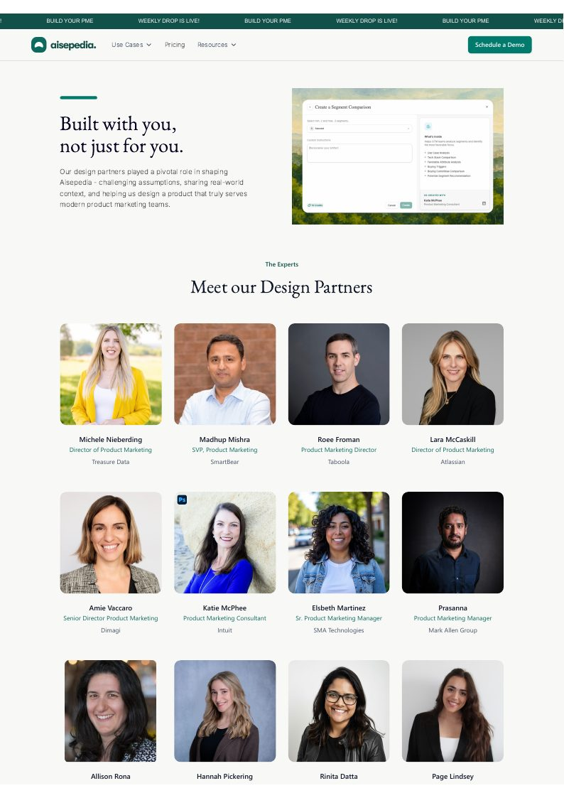

Positioning becomes reach, and reach has to become pipeline
01PositionBuyer research, ICP definition, and the narrative that holds up in a skeptical room
02ReachField and events, content, and outbound into named accounts
03ConvertFollow-up, nurture, and the path from first touch to a booked demo
04ProveEvery touch tagged and tracked through to pipeline by stage
Five cases
What changed, why it changed, and what I can prove
01
Category launch
Ran a launch event end to end for 36 senior marketers
Owned start to finish
The problem
A pre-seed company with no brand needed to reach senior product marketing leaders in San Francisco. That audience ignores vendor outreach and there was no budget to buy their attention, so the room itself had to be worth their evening.
What I owned
ProgrammedBuilt the event around a debate practitioners were already having about their own role, rather than a product pitch.
RecruitedBooked four panelists, from Atlassian, Meta Reality Labs, Google, and a fourth whose background spans Celona, Google, and Zscaler.
ProducedRan venue, logistics, run of show, and promotion for the November 11, 2025 date in San Francisco.
ConvertedOwned follow-up after the event, moving attendees into product conversations and the design partner program.
The event was positioned around a debate senior practitioners were already having about the product marketing role. The product stayed secondary to a room worth joining.
36 senior attendees filled the room, drawn without paid promotion.
4 panelists came from Atlassian, Meta Reality Labs, Google, and Celona.
No events team behind it. I owned venue, speakers, run of show, promotion, and follow-up.
A live event page still runs on aisepedia.com as a lasting brand asset.
Attendance and the panel are verified. I do not attribute pipeline to this event separately. Any follow-up sits inside the tracked account motion in case 02.
Built six-figure qualified pipeline from a standing start
From no list to tracked pipeline
The problem
No brand, no list, no inbound, and no sales development support. The buyers were senior practitioners at large technology companies who receive dozens of vendor messages a week. Every account had to be found, researched, reached, and tracked by one person.
What I owned
TargetedDefined the ICP and built a three-figure named-account list, then tracked accounts from first touch through qualification.
ReachedRan 1,000 targeted LinkedIn and outbound reach-outs through a six-week sequence.
QualifiedMoved responses into discovery calls, demos, and the design partner program.
TrackedHeld every account in HubSpot so pipeline could be read by stage instead of by anecdote.
6 figures
in qualified pipeline
Across a three-figure account base, built with no paid media, no sales development rep, and no inherited list.
Six-figure qualified pipeline across the tracked account base.
A three-figure account base tracked from first touch through qualification.
1,000 reach-outs ran through a six-week outbound sequence.
20 signups converted from the first cold outbound cohort.
Qualified pipeline, not booked revenue. These are accounts that reached a defined qualification bar.
03
Design partner conversion
Turned 13 design partners into proof, panelists, and the first enterprise deal
From cold list to public advocates
The problem
A pre-seed AI product had no customers, no references, and no credibility with enterprise buyers. Senior practitioners had to be recruited cold, given a reason to keep showing up, and then be willing to put their name to it in public.
What I owned
RecruitedBuilt a 13-member design partner cohort, 8 at Director level or above, from Atlassian, Splunk, Taboola, Dimagi, and Intuit.
RanHeld 32 structured sessions on workflow, pain, trust, and buying criteria across 13 industries and 9 countries.
ActivatedMoved partners into public quotes, panel seats, and reference conversations with prospective buyers.
ConvertedHelped move one design partner relationship into the first signed enterprise deal, Splunk (a Cisco company).

Positioning artifact
Built with you, not just for you.
The page made practitioners part of the product story. It showed that Aisepedia was shaped with product marketing leaders, then backed the message with named design partners.
“Aisepedia brings structure to that ambiguity in a way I’ve never seen before. It lets you get hyper-specific about your ICP and seamlessly thread that precision across every artifact you create.”
Rinita Datta, Director of Product Marketing, Splunk (a Cisco company)
13 design partners recruited, 8 at Director level or above.
32 sessions ran across 13 industries and 9 countries.
4 practitioners carried the story onto the PMM 2.0 stage.
First enterprise deal, Splunk (a Cisco company), converted from a design partner.
04
GTM systems
Built the marketing operating system that runs the motion
Direct measured result
The problem
One marketer cannot chase every lead, book every meeting, and still know what is working. Follow-up decayed whenever I was in a discovery call, and nobody could say where people dropped out between first touch and real product use.
What I owned
AutomatedBuilt lead follow-up and lifecycle flows across n8n, HubSpot, and Calendly triggers so no inbound lead sat waiting on me.
InstrumentedDefined an eight-stage funnel and 11 acquisition and activation events across Mixpanel and PostHog.
DiagnosedQueried drop-off in SQL and mapped 12 abandonment stages to observed behavior, likely cause, and a recovery action.
MeasuredSet 22 lifecycle KPIs so acquisition, activation, and retention each had a named signal and a warning threshold.
24%
reduction in early-stage abandonment
Result of automated follow-up, instrumentation, onboarding changes, and recovery flows working together.
24% less early abandonment after the instrumentation and recovery work landed.
22 lifecycle KPIs gave acquisition and activation named signals.
11 tracked events mapped across 8 defined funnel stages.
3 systems connected: n8n, HubSpot, and Calendly running follow-up without me.
Built the reporting a nine-figure subscription portfolio ran on
From revenue data to retention decisions
The problem
Leadership needed consistent signals across renewals, expansion, wallet retention, product lines, and vertical performance to make timely calls. Marketing and sales were arguing about which accounts were actually at risk, with no shared number to point at.
What I owned
BuiltCreated the daily wallet-retention, weekly renewal, monthly MRR, and vertical-profitability reporting, read by the CEO, COO, and VP of Finance.
AnalyzedConnected renewal, expansion, product-line, and wallet-retention signals across the subscription book.
SurfacedFlagged recoverable ACV, monthly expansion openings, and verticals slipping month over month.
DirectedMigrated a broad account-executive team and tens of thousands of deal records to a new system with zero errors using automated validation rules.
Decision systems
Daily wallet-retention reporting.
Weekly renewal risk reporting.
Monthly MRR and vertical-profitability analysis.
A nine-figure active subscription portfolio across multiple product lines was covered by reporting I built and ran.
Strong net wallet retention was reported on for the flagship product.
Seven-figure recoverable ACV was surfaced through renewal and retention analysis.
Six-figure monthly expansion potential was identified through MRR and product-line reporting.
POLITICO figures were reported on and analyzed. They were not revenue I owned or closed.
Metric attribution
What the numbers do and do not claim
Directly measured
24% less early-stage abandonment
Tied to tracked behavior and a defined system of automated follow-up, instrumentation, onboarding changes, and recovery actions.
Qualified, not booked
Six-figure pipeline across a three-figure account base
Qualified pipeline means accounts that reached a defined qualification bar, not signed revenue. The first enterprise deal, Splunk (a Cisco company), converted from a design partner relationship.
Reported and analyzed
Nine-figure portfolio reporting and retention signals
Figures were covered by reporting and analysis I built at POLITICO. They represent the decisions supported, not revenue ownership.
Want the longer version?
I can walk through the problem, evidence, decisions, trade-offs, and results.